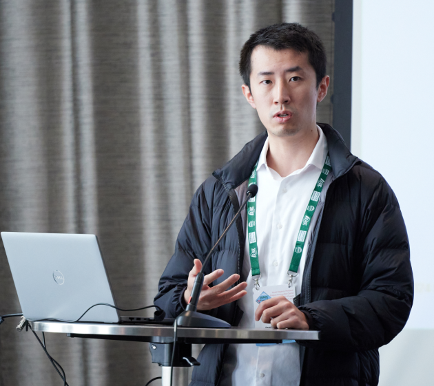

About Me

My name is Robert. Most people call me Rob or Bob. I am a licensed Professional Engineer (PE) in California, currently working as a structural design engineer at
Degenkolb. I work on seismic retrofits, hospital design, computational tool development, data visualization, and various R&D initiatives.
I grew up in Toronto and I am Canadian. I moved to the U.S. in 2018 to pursue my Master's degree in Structural Engineering at Stanford University. Before that, I earned my Bachelor's degree in
Civil Engineering from the University of Ottawa.
My interests include structural engineering, programming, and design/typography. In other words, I like designing buildings, creating software, and making things look pretty.
In my spare time, I like to play tennis, rock climb, run, hike, and write/code on the internet. I am the creator of several popular structural engineering python packages. Most of which are
free, open-source, and available
on Github.
Welcome to my little corner of the internet. Please reach out if you'd like to connect or collaborate.
Favorite Books
I mostly read non-fiction, with particular interest in history, business, psychology, productivity, self-improvement, and of course, biographies. I read at a glacial pace - around 12 books a year - and I genuinely
envy those who manage to read 52 books a year while still juggling a full-time job. Here are some of my favorite books.
- 2024: Hackers and Painters - Paul Graham
- 2023: Deep Work - Cal Newport
- 2022: Peak - Anders Ericsson and Robert Pool
- 2021: The Attention Merchant - Tim Wu
- 2020: Steve Jobs - Walter Isaacson
- 2019: Sapiens - Yuval Noah Harari
- 2018: The Paradox of Choice - Barry Schwartz
- 2017: Quiet - Susan Cain
- 2016: How to Win Friends and Influence People - Dale Carnegie
Favorite Movies
I keep an ever-growing list of every movies I've ever watched.
In general, I am a fan of irony, witty humor, great acting, and unfettered creativity. I tend to rate movies favorably if it's morally elevating. I am not a fan of mass-market
super hero sequels and remakes, nor do I enjoy arthouse nothingburger movies. Here are ten movies that really resonated with me.
- Whiplash
- Wall-E
- Little Miss Sunshine
- 12 Angry Men
- Inception
- A Man Called Ove
- Inside Out
- The Matrix
- Forrest Gump
- The Shawshank Redemption
Favorite Quotes
Here are some of my favorite quotes. The thing about quotes - and wisdom in general - is that they often sound like cliches, and they tend to be quite personal. It's difficult to appreciate an
insight until you've acquire the requisite firsthand experience to internalize it. This is exactly why I think self-help book aren't as effective as they're advertised to be. Someone could hand me the
secret to eternal happiness and health, and I'd probably brush it off as platitude - in the same way that my 16 year-old self would have scoffed at the quotes below.
- "Beauty is the first test: there is no permanent place in this world for ugly mathematics" - G. H. Hardy
- "All models are wrong, but some are useful" - George Box
- "To add is expected, to subtract is design."
- "Everything should be made as simple as possible, but not simpler." - Albert Einstein
- "Education is the art of telling a series of decreasing lies."
- "Don't preach, narrate."
- "If It's worth doing, it's worth doing well."